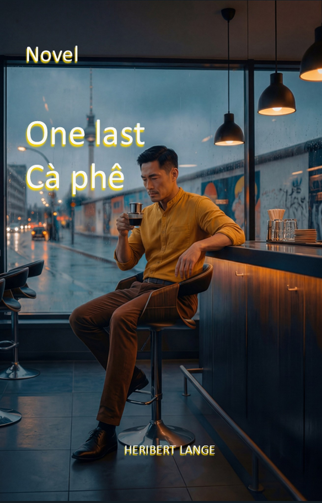
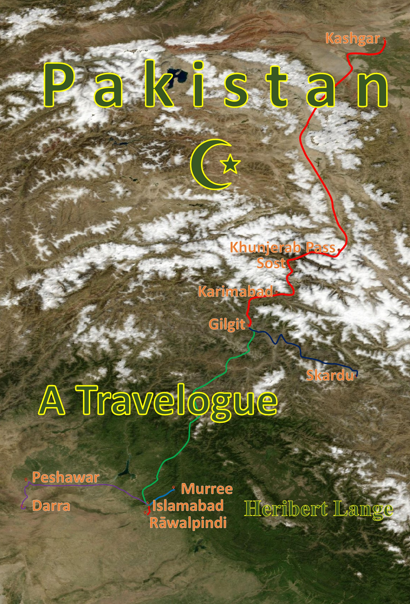

How my books are reviewed
What readers write about my books, in their own words. The reviews appeared on Amazon.de in German; the English versions here are translations.

“One Last Cà phê” is not a book you read in passing. Heribert Lange tells his story at length and with great love of detail. He takes his readers to different places, introduces numerous characters with their life stories, and gradually lets several plot threads grow out of them. The settings in particular are described in such detail that you really feel as if you were travelling with the characters. Relationships and personal fates meet elements of crime fiction, creating a story on many different levels. Those who prefer fast stories with a straightforward plot will have to get used to the detailed narrative style. Those who like to dive deep into a story, get to know many characters and enjoy details and different settings, will find plenty to read here. An extensive, multi-layered novel that deserves your time.
Translated from the German original
A book you don’t just read in passing. You savour it and find yourself in a pool of love, crime and many twists on several levels. The characters are very authentic and you have pictures in your head while reading. The writing style is convincing and captivating. I won’t give anything away about the content; the blurb offers a glimpse. I can only recommend the book.
Translated from the German original

The travel report is a valuable document for everyone who wants to understand what Pakistan is at its core. It manages to build a bridge between the foreign and the familiar without sliding into kitsch. A firm recommendation for explorers looking for the real spark in travel literature.
Here someone writes who does not deliver a “perfect copy” of travel experiences but shares genuine, unfiltered impressions. Every line breathes the spirit of setting out and honest curiosity. The writing style feels like an ordering resonance to the chaos and the beauty that together make up Pakistan. Heribert Lange describes the hospitality and human warmth in Pakistan with an intensity that makes the country tangible.
Translated from the German original